공조냉동기계산업기사 (2005-08-07 기출문제)
1과목: 공기조화
1. 다음 그림에서 습공기의 상태가 1지점에서 2지점으로 이동하였다. 이 습공기는 어떤 과정을 거쳤는가? (단, h1=h1')
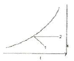
- 증기분무 가습 - 가열
- 냉각 - 제습제를 이용한 제습
- 순환수가습 - 가열
- 온수부무 가습 - 가열
(정답률: 70%)

2. 열수분비(u)에 대한 다음의 설명 중 옳은 것은?
- 상대습도의 증가량에 대한 엔탈피의 증가량
- 상대습도의 증가량에 대한 절대습도의 증가량
- 절대습도의 증가량에 대한 엔탈피의 증가량
- 절대습도의 증가량에 대한 상대습도의 증가량
(정답률: 47%)
3. 아래 그림은 환기(R.A)와 외기(O.A)를 혼합한 후 가습하고 이 공기를 다시 가열하는 과정을 공기선도상에 표시한 것이다. 가습과정은?
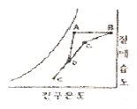
- ED
- DC
- DA
- CB
(정답률: 71%)
4. 덕트의 재료로서 일반적으로 가장 많이 사용되는 것은?
- 아연도 철판
- PVE판
- 스테인레스판
- 알루미늄판
(정답률: 76%)
5. 외기부하에 대한 잠열의 계산식은 다음중 어느 것인가? (단, Xo, Xi:외기 및 실내공기의 절대습도, to, ti:외기 및 실내공기의 온도, G, Q:공기의 질량 및 체적유량)(오류 신고가 접수된 문제입니다. 반드시 정답과 해설을 확인하시기 바랍니다.)
- qL=597G(Xo-Xi)
- qL=597Q(Xo-Xi)
- qL=720G(Xo-Xi)
- qL=720Q(Xo-Xi)
(정답률: 34%)
6. 다음 손실 풍량을 구하는 계산식에서 qts는 무엇인가?
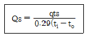
- 실내 잠열부하
- 실내 전체손실부하
- 실내 감열부하
- 유효 잠열비
(정답률: 41%)
7. 2중 덕트방식을 설명한 것 중 관계 없는 것은?
- 전공기 방식이다.
- 열복원 방식이다.
- 개별제어가 가능하다.
- 열손실이 거의 없다.
(정답률: 48%)
8. 다음 설명 중 옳지 않은 것은?
- 주철 보일러는 능력이 부족할 때는 섹션을 늘릴 수 없다.
- 주철 보일러는 고압증기를 얻을 수 없다.
- 주처 보일러는 강제보일러보다 내식성이 우수하다.
- 주철 보일러는 배부청소가 불편하고 사용압력과 용량의 제한을 받는다.
(정답률: 50%)
9. 엔탈피(Enthalpy)가 0kcal/kg인 공기는 다음 중 어느 것인가?
- 0℃ 습공기
- 0℃ 건공기
- 0℃ 포화공기
- 32℃ 습공기
(정답률: 67%)
10. 공조장치의 공기 여과기에서 에어필터 효물의 측정법이 아닌 것은?
- 중량법
- 변색도법(비색법)
- 집진법
- DOP법
(정답률: 55%)
11. 온수난방 배관시의 고려할 사항 중 틀린 것은?
- 배관이 최저점이나 입관의 하단에서 배수용 밸브를 설치한다.
- 배관내 발생되는 기포를 배출시킬 수 있는 장치를 한다.
- 팽창관 도중에는 밸브를 성치하지 않는다.
- 증기배관과는 달리 신축 이음은 설치하지 않아야 한다.
(정답률: 72%)
12. 다음 손싱 수두 공식 중 관내 마찰손실 수두를 구하는 식은 어느 것인다? (단, d: 관이 안지름, ℓ : 관의 길이, g : 중력가속도, V : 유속, f : 마찰계수, r : 물의 비중량)
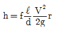
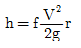
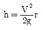
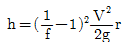
(정답률: 63%)
13. 유인 유닛 공조방식에 대한 설명 중 옳은 것은?
- 유인비(유인비)가 크기 때문에 유닛의 여과기가 막히는 일이 거의 없다.
- 덕트 공간이 비교적 크다.
- 각 실의 제어가 어렵다.
- 유닛이 실내의 유효 공간을 감소시킨다.
(정답률: 41%)
14. 사람 주위에 흐르는 기류의 쾌적한 속도는?
- 0.1~0.2m/sec
- 0.3~0.4m/sec
- 0.5~0.6m/sec
- 0.7~0.8m/sec
(정답률: 62%)
15. 두께 150mm 면적 10m2인 콘크리이트 벽의 외부온도가 30℃ 내부온도가 20℃일 때 8시간 동안 전달되는 열량은 얼마인가? (단, 콘크리이트 열전도율은 1.3kcal/mh℃ 이다.)
- 866.7kcal
- 1733.3kcal
- 2600kcal
- 6933.3kcal
(정답률: 39%)
16. 병원이나 식품공장 등 미생물 오염을 방지하기 위한 공기조화 설비는?
- 바이오 클린룸
- 제습실
- 항온 항습실
- V.A.V 시스템
(정답률: 91%)
17. 다음 중 에어 핸들린 유니트(Air Handling Unit)의 구성요소가 아닌 것은?
- 공기 여과기
- 송풍기
- 공기 세정기
- 압축기
(정답률: 81%)
18. 가습장치에 관한 다음 설명 중 가장 옳은 것은?
- 증기를 분무하는 방법은 제어의 응답성이 나쁘다.
- 초음파 가습기는 저온에서 가습할 수 있어 전산실드에 사용된다.
- 수분무가습의 경우 노즐의 구경이 클수록 가습에 유리하다.
- 에어워셔의 경우 입구수온이 입구공기의 노점온도보다 낮은 경우에 가습된다.
(정답률: 48%)
19. 다음 중 가장 낮은 압력으로 운전되며 파열시 재해가 가장 작은 보일러는?
- 노통연간보일러
- 주철제보일러
- 수관식보일러
- 관류보일러
(정답률: 52%)
20. 개별방식의 특징으로 적당하지 않은 것은?
- 설치장소에 제한을 받는다.
- 실내에 유닛의 설치면적을 차지한다.
- 취급이 간단하고 운전이 용이하다.
- 외기냉방을 할 수 있다.
(정답률: 69%)
2과목: 냉동공학
21. 액압축 (Liquid back) 현상의 영향은?
- 축수하중 감소
- 소요동력 감소
- 토출가스 온도저하
- 흡입관 서리 생성
(정답률: 46%)
22. 다음 중 습압축 냉동 사이클을 나타낸 것은?
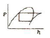
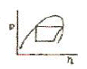
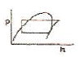
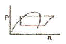
(정답률: 65%)
23. 역 carnot cycle에서 저열원 온도를 5℃, 고열원 온도를 40℃라고 할 때 냉동능력 1000kcal/h에 대한 소요동력(kcal/h)을 구하면?
- 252kcal/h
- 152kcal/h
- 126kcal/h
- 304kcal/h
(정답률: 38%)
24. 50RT의 브라인 쿨러에서 입구온도 -15℃일 때 브라인의 유량이 0.5m3/min이라면 출구의 온도는 몇 ℃인가? (단, 브라인의 비중 1.27, 비열은 0.66kcal/kg℃이다.)
- -20.3℃
- -21.6℃
- -11℃
- -18.3℃
(정답률: 62%)
25. 초저온 냉동장치(Super chilling unit)로 적당하지 않은 냉동장치는 어느 것인가?
- 다단압축식(Multi - stage)
- 다원압축식(Multi - stage Cascade)
- 2원압축식(Cascade System)
- 단단압축식(Single - stage)
(정답률: 77%)
26. 다음 증발식 응축기에 관한 설명 중 옳은 것은?
- 증발식 응축기의 내수보급은 증발에 의한 물의 소비량만 보급한다.
- 증발식 응축기는 물의 현열을 이용하여 냉각하는 것이다.
- 외기의 습구온도 영향을 많이 받는다.
- 압력강하가 작으므로 고압측 배관에 적당하다.
(정답률: 53%)
27. 다음은 비열에 관한 설명이다. 옳은 것은?
- 비열이 큰 물질 일수록 빨리 식거나 빨리 더워진다.
- 비열은 기체보가 액체, 액체보가 고체가 크다.
- 비령리란 어떤 물질 1kg을 1℃높이는데 필요한 열량을 말한다.
- 비열비는(정압비열/정압비열)로 표시되며 그 값은 R-22가 암모니아가스보다 크다.
(정답률: 80%)
28. 응축기 전열관벽의 오염요소가 아닌 것은?
- 생물적인 오염
- 용해석출성 오염
- 물리반응에 의한 오염
- 입자상물질에 의한 오염
(정답률: 36%)
29. 다음 중 암모니아 냉동장치에서 워터재킷을 설치하는 이유로서 옳은 것은?
- 다른 냉매에 비해 압축비가 크기 때문
- 다른 냉매에 비해 비열비가 크기 때문
- 체적효율을 낮추기 위해
- 냉동능력을 낮추기 위해
(정답률: 58%)
30. 공기 1kg을 압력 1.33kg/cm2abs, 체적 0.85m3상태로부터 압력 5kg/cm2abs, 온도 300℃로 변화시켰다. 이때의 온도 상승은 얼마인가?
- 372℃
- 368℃
- 298℃
- 273℃
(정답률: 36%)
31. 다음 흡수식 냉동기에 대한 설명 중 올바른 것은?
- 공기조화용으로 많이 사용되거나, H2O+LiBr계는 0℃이하의 저온을 얻을 수 있다.
- 압축기는 없으나, 발생기 등에서 사용되는 전력량은 압축식 냉동기보다 많다.
- H2O+LiBr계나 H2O+NH3 계에서는 흡수제가 H2O이다.
- H2O+LiBr계에서는 응축측에서 비체적이 커지므로 공냉화가 곤란하다.
(정답률: 35%)
32. 압축내동 사이클에서 엔트로피가 감소하고 있는 과정은 다음중 어느 과정인가?
- 증발과정
- 압축과정
- 응축과정
- 팽창과정
(정답률: 66%)
33. 냉동장치에 다소 습기가 있을 때 냉동장치에 가장 큰 영향을 주는 냉매는?
- 암모니아
- 아황산 가스
- 메틸 클로라이드
- 탄산가스
(정답률: 44%)
34. 균압관에 대한 설명 중 맞는 것은?
- 응축기와 유분리기(油分離器)의 상부를 연결한다.
- 유분리기와 수액기(受液器)의 상부를 연결한다.
- 응축기에서 수액기로 흐르는 액체의 흐름에 영향을 준다.
- 응축기의 응축작용에 직접 영향을 준다.
(정답률: 59%)
35. 온도식 자동팽창 밸브에 있어서 강온통의 설치위치가 올바른 것은?
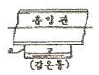
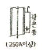
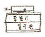
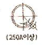
(정답률: 56%)
36. 계가 외부로부터 에너지 공급없이 그 자체의 내부에너지를 소모하여 외부에 대하여 2135kgㆍm의 일을 하였다면 내부에너지의 변화량은 얼마인가?
- 1kcal
- 5kcal
- 15kcal
- 25kcal
(정답률: 58%)
37. 다음 무기 Brine 중에 공정점이 제일 낮은 것은?
- MgCl2
- CaCl2
- H2O
- NaCl
(정답률: 67%)
38. 액화가스 동결법에 사용하는 가스로 옳은 것은?
- 액화가스, 액화이산화탄소
- 액화산소, 액화천연가스
- 액화질소, 액화이산화탄소
- 액화질소, 액화암모니아
(정답률: 67%)
39. 다음 응축기 중 냉동톤당 냉각수량이 가장 많은 것은?
- 횡형응축기
- 대기식응축기
- 이중관식응축기
- 입형응축기
(정답률: 24%)
40. 다음 설명 중 증발기의 전열 작용에 관한 내용으로 옳지 않은 것은?
- 건식 증발기에서 디스트리뷰터의 사용은 냉매량을 균일하게 분배하기 위해서 이다.
- 건식은 반만액식보다 일반적으로 냉매 보유량이 적다.
- 공기냉각기의 능력을 충분히 발휘하기 위해서는 냉매와 공기의 흐름을 병행류로 해야 한다.
- 공랭식 증발기에 전열판을 붙이면 전열효과가 좋아진다.
(정답률: 64%)
3과목: 배관일반
41. 기수혼합식 급탕법에 관한 다음 설명 중 잘못된 것은?
- 증기를 열원으로 하는 급탕법이다.
- 증기로 인한 소음은 스팀 사이렌서로 완화시킨다.
- 스팀 사이렌서의 종류에는 P형과 U형이 있다.
- 사용증기압력은 1~4kg/cm2 정도이다.
(정답률: 31%)
42. 건식 진공 환수배관의 증기주관 구배는?
- 1/100~1/150 의 선하 구배
- 1/200~1/300 의 선하 구배
- 1/350~1/400 의 선하 구배
- 1/450~1/500 의 선하 구배
(정답률: 51%)
43. 엘보를 용접 이음으로 나타낸 기호는?
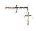
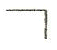
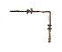
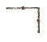
(정답률: 70%)
44. 급탄배관길이 L[m], 관의 선팽창계수 α[mm/mm℃], 초기온도 t1[℃], 최종온도 t2[℃]일 때 관의 팽창량은 몇 [mm]인가?
- 1000La(t2-t1)
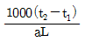
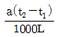
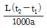
(정답률: 36%)
45. 스케줄 번호에 의해 두께를 나타내는 관이 아닌 것은?
- 수도용 아연도금 강관
- 압력배관용 탄소강관
- 고압 배관용 탄소강관
- 배관용 스테인리스 강관
(정답률: 65%)
46. 고압, 중압, 저압 등의 어느 것에나 사용 가능한 증기트랩은?
- 실푠트랩
- 그리이스트랩
- 충동식트랩
- 버킷트랩
(정답률: 47%)
47. 냉매배관 중 토출관이란?
- 압축기에서 응축기까지의 배관
- 응축기에서 팽창밸브가지의 배관
- 증발기에서 압축기까지의 배관
- 응축기에서 증발기까지의 배관
(정답률: 53%)
48. 다음 중 체크밸브의 종류가 아닌 것은?
- 스윙형 체크밸브
- 듀얼 플레이트 체크밸브
- 리프트형 체크밸브
- 버터플라이 체크밸브
(정답률: 43%)
49. 다음 중 한쪽은 커플링으로 이음쇠 내에 동관이 들어갈 수 있도록 되어 있고 다른 한 쪽은 수나사가 있어 강 부속과 연결할 수 있도록 되어 있는 동관용 이음쇠는 다음중 어느 것인가?(문제 오류로 2번 4번 보기가 같습니다. 정확한 내용을 아시는분께서는 오류신고를 통하여 보기 내용 작성부탁드립니다. 정답은 2번입니다.)
- 커플링C×C
- 어댑터C×M
- 어댑터Ftg×M
- 어댑터C×M
(정답률: 74%)
50. 암모니아 냉매사용시 일반적으로 사용하는 배관재료는?
- 알루미늄 합금관
- 동관
- 아연관
- 강관
(정답률: 69%)
51. 증발기가 응축기보다 아래에 있는 액관의 경우에는 2m 이상의 역루프배관을 해준다. 그 이유는?
- 압축기 가동, 정지시 냉매액이 증발기로 흘러내리는 것을 방지하기 위해서이다.
- 압력강하를 크게 줄이기 위해서 이다.
- 신축을 감소시키기 위해서 이다.
- 전자밸브 설치위치를 정확히 하기 위해서 이다.
(정답률: 72%)
52. 관 결합방식의 표시방법 중 소켓식을 나타낸 것은?
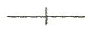
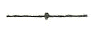
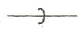
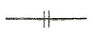
(정답률: 66%)
53. 다음 밸브의 설치에 대한 설명 중 틀린 것은?
- 슬루스 밸브는 유량조절용 보다는 개폐용(ON-OFF용)에 주로 사용한다.
- 슬루스 밸브는 일명 게이트 밸브라고도 한다.
- 스트레이너는 배관도중에 먼지, 흙, 모래 등을 제거하지 위한 부속품이다.
- 스트레이너는 밸브류 등의 뒤에 설치한다.
(정답률: 72%)
54. 보온재의 선택요건이 아닌 것은?
- 열전도도가 작고 방습성이 클 것
- 인화성이 우수할 것
- 내압강도가 클 것
- 사용온도 범위가 클 것
(정답률: 59%)
55. 동관의 납땜이음에 사용하는 연납재와 경납재의 용융온도 구분은?
- 100℃
- 300℃
- 450℃
- 650℃
(정답률: 50%)
56. 온수 난방설비와 관계가 없는 것은?
- 팽창밸브
- 하아트 포드 접속법
- 안전관
- 팽창관
(정답률: 50%)
57. 다음은 증기난방 배관 시공법에 관한 설명이다. 틀린 것은?
- 분기관은 주관에 대해 45° 이상으로 취출해 낸다.
- 고압증기의 환수관을 저압증기의 환수관에 접속하는 경우 증발탱크를 경우시킨다.
- 이경 증기관 접합 시공시 편심 이경 조이트를 사용하여 응축수의 고임을 방지한다.
- 암거내 배관시에는 밸브 트랩 등을 가능하면 맨홀 근처에서 멀게 집결시킨다.
(정답률: 66%)
58. 배관의 신축이음 흡수를 위한 부속의 종류가 아닌 것은?
- 빅토릭 조인트
- 슬리브형
- 스위블 조인트
- 루프형벤드
(정답률: 61%)
59. 양정 40m, 양수량 0.4m3/min으로 작동하고 있는 펌프의 회전수가 2000rpm이었다가 전압강하로 인하여 회전수가 1500pm으로 되었다면 양수량은 다음 중 어느 것인가?
- 0.2m3/min
- 0.3m3/min
- 0.4m3/min
- 0.5m3/min
(정답률: 37%)
60. 캐비테이션(cavitation)의 발생 조건이 아닌 것은?
- 흡입양정이 클 경우
- 날개차의 원주속도가 클 경우
- 액체의 온도가 낮을 경우
- 날개차의 모양이 적당하지 않을 경우
(정답률: 57%)
4과목: 전기제어공학
61. 유도전동기의 속도제어에 사용할 수 없는 전력 변환기는?
- 인버터
- 사이클로컨버터
- 위상제어기
- 정류기
(정답률: 55%)
62. 3상 교류전압 및 주파수를 변화시켜 유도전동기의 회전수를 1750rpm으로 하고자 한다. 이 경우 회전수는 자동제어계의 구성요소 중 어느 것에 해당하는가?
- 제어량
- 목표값
- 조작량
- 제어대상
(정답률: 41%)
63. 직류전동기의 속도제어 방법 중 속도제어의 범위가 가장 광범위 하며,운전효율이 양호한 것은?
- 저항제어법
- 전압제어법
- 계자제어법
- 2차여자제어법
(정답률: 54%)
64. 저속이지만 큰 출력을 얻을 수 있고, 속응성이 빠른 조작기기기는?
- 유압식 조작기기
- 공기압식 조작기기
- 전기식 조작기기
- 기계식 조작기기
(정답률: 54%)
65. 현대적 개념에서 자동제어가 필요한 이유로 볼 수 없는 것은?
- 작업능률의 향상
- 품질향상과 균일화
- 위험요소가 존재하는 작업에의 대응
- 인력 및 시설비용 절감
(정답률: 48%)
66. 지시 전기계기의 정확성에 의한 분류가 아닌 것은?
- 0.2급
- 0.5급
- 2.5급
- 5급
(정답률: 57%)
67. 다음 중 불연속 제어계는?
- 비례제어
- 미분제어
- 적분제어
- 2 치제어
(정답률: 56%)
68. 15C의 전기가 3초간 흐르면 전류는 몇 A 인가?
- 2
- 3
- 4
- 5
(정답률: 68%)
69. 논리식
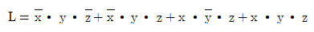
을 간단히 한 식으로 옳은 것은?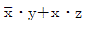
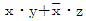
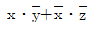
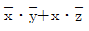
(정답률: 40%)
70. 그림과 같은 논리회로에서 출력 X의 값은?
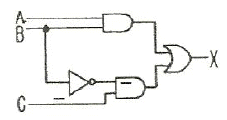
- A
- AㆍBㆍC
- AㆍB+BㆍC
- (A+B)ㆍC
(정답률: 53%)
71. 지름10cm, 권수 10회의 원형코일에 10A의 전류를 흘릴 때 중심에서의 자계의 세기는 약 몇 AT/m 인가?
- 63.7
- 147.7
- 318.5
- 420.5
(정답률: 25%)
72. 그림과 같은 회로에서 각 저항에 걸리는 전압 V1 과 V2는 몇 V 인가?
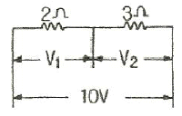
- V1=10, V2=10
- V1=6, V2=4
- V1=4, V2=6
- V1=5, V2=5
(정답률: 52%)
73. 피드백 제어계의 특징으로 옳은 것은?
- 정확성이 떨어진다.
- 감대폭이 감소한다.
- 계의 특정 변화에 대한 입력대 출력비의 강도가 감소한다.
- 발진이 전혀 없고 항상 안정한 상태로 되어가는 경향이 있다.
(정답률: 58%)
74. 파형률을 나타내는 것은?
- 실효값/평균값
- 최대값/평균값
- 최대값/실효값
- 실효값/최대값
(정답률: 56%)
75. 워드 레오너드방식의 목적은?
- 정류 개선
- 속도 제어
- 계자자속 조정
- 병렬 운전
(정답률: 43%)
76. 대칭 3상 Y부하에서 각 상의 임피던스가 Z=3+j4Ω이고, 부하전류가 20A 일 때, 이 부하의 선간전압은 약 몇 V인가?
- 141
- 173
- 220
- 282
(정답률: 56%)
77. 그림의 선도 중 가장 안정한 것은?
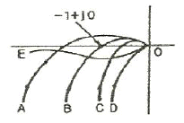
- A
- B
- C
- D
(정답률: 24%)
78. 프로그램형 제어기의 강전(强電)출력이 아닌 것은?
- 프린터
- 전동기
- 계전기
- 솔레노이드
(정답률: 53%)
79. 그림과 같은 신호 흐름 선도에서 C/R 를 구하면?
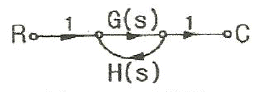
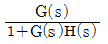
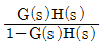
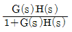
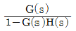
(정답률: 49%)
80. 직류 전동기의 회전 방향을 바꾸려면 어떻게 하는가?
- 입력단자의 극성을 바꾼다.
- 전기자의 접속을 바꾼다.
- 보극권선의 접속을 바꾼다.
- 브러시의 위치를 조정한다.
(정답률: 39%)